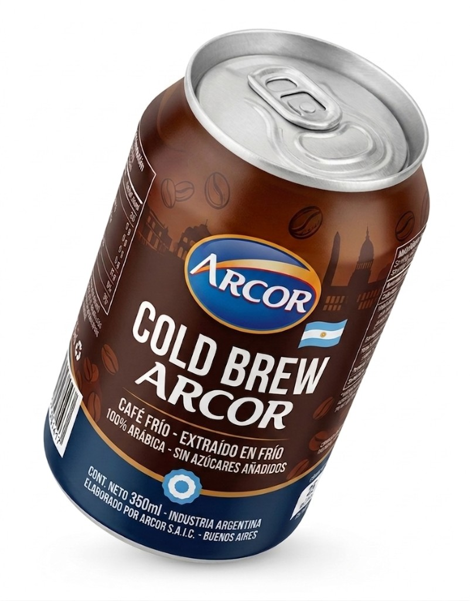
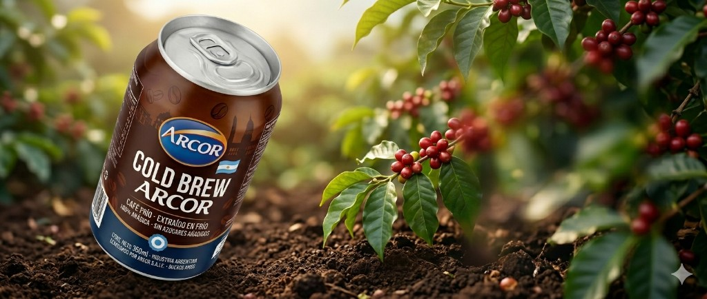
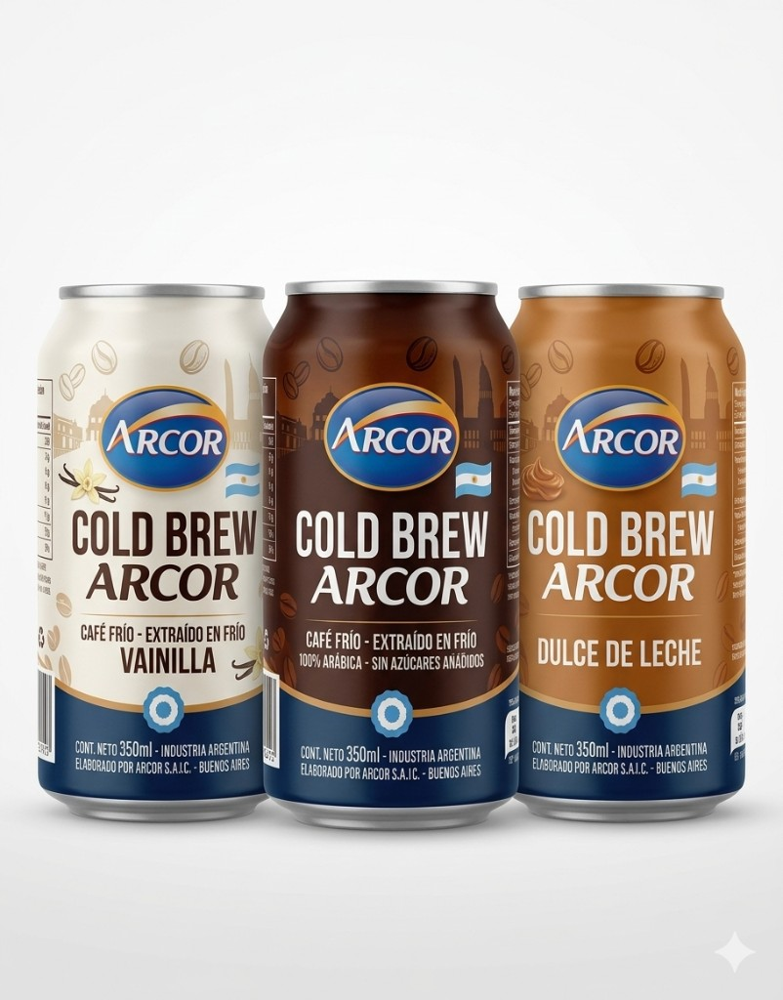

Cold Brew Clásico
Nuestro Cold Brew tradicional de cafe helado listo para darte ese boost

Innovación y calidad Arcor en una propuesta refrescante, lista para acompañarte durante todo el día.

Nuestro Cold Brew tradicional de cafe helado listo para darte ese boost

Ahora EL Cold Brew viene con 3 sabores: Vainilla, Chocolate y Dulce de Leche
Producción bajo estándares rigurosos en planta para asegurar consistencia, seguridad y máximo sabor.
Café helado práctico para kioscos y supermercados, ideal para consumo inmediato en cualquier momento.
Opciones clásicas y saborizadas para distintos gustos, con el respaldo de una marca argentina líder.